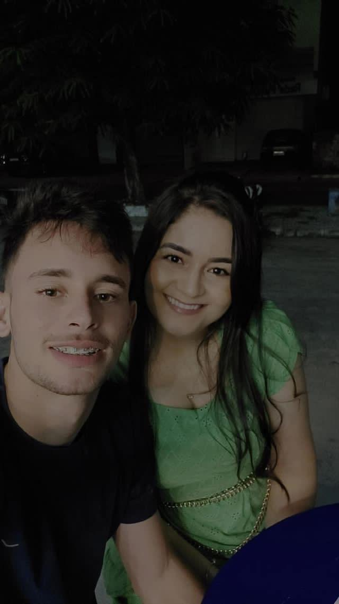

12/05/2024 - creio que foi onde tudo começou, com uma pequena curtida durante o dia, e uma leve troca de olhares durante à noite.
18/05/2024 - dia de nossa primeira tentativa de tirar foto juntos, após um culto de jovens, estavámos nos conhecendo, aquela velha conversa naquela mesa de jantar kkk!
18/05/2024 - depois de várias tentativas, até que enfim a foto deu certo, com seu lindo e maravilhoso, "rostinho de Jesus" rs!
23/05/2024 - jantarzinho a luz de velas improvisado kkkk! faltou luz do nada também

27/05/2024 - acho que é uma das fotos mais lindas nossas, e creio que seja a mais especial, 1º dia de namoro, um belo açaí, no local onde nos vimos pela 1ª vez, justamente com estas vestimentas kkk!
04/06/2024 - jantinha com aquele belo macarrão que você "amava" kkkk!
08/06/2024 - agora aqui é uma senhora janta!
14/06/2024 - uma chamada de vídeo contendo muita saudade um do outro, naquele sábado, onde eu tive a audácia de tirar a barba, e deu pra ver sua reação "bem positiva" em relação à isso kkk!

17/06/2024 - você havia acabado de chegar de viagem, nos presenteamos com presentes do dia dos namorados, te esperava ansiosamente, e não curtiu muito quando viu seu bebê sem barba, de fato, parecia um bebê mesmo kkkk!
17/06/2024 - ainda naquele mesmo dia, saímos para comer algo diferente, no ponto da codorna, você estava magnificamente linda e perfeita, sem condições. ô casal lindo haha
17/06/2024 - essa foto só não ficou melhor pq eu estava sem minha maquiagem, a "barba" kkkk!parece que esse dia foi o dia das fotos kkk!
18/06/2024 - uma merenda de qualidade preparada por ela, bolo top, com pães de queijo, e ela com seu cappuccino.
11/07/2024 - nossas conversas na calçada da crefácil kkkk! onde foi de fato nosso primeiro encontro.
15/07/2024 - meio duvidoso aí né, mas pior que tava bom oh, só passou uns 10 dias dentro da geladeira kkkk!
06/08/2024 - nem sempra queria tirar foto, dizendo que não tava com "rostinho de Jesus", mas sempre com brilho haha
10/08/2024 - esta foto, esta magnifica foto, após um ótimo culto ao Senhor na Curupira, sem condições, que casal lindo Jesus!!!
11/08/2024 - um domingo à noite, após o culto, cada fazendo suas atividades, esta foto realça um comprometimento que cada um tem com o futuro.
13/08/2024 - a masterchef ataca mais uma vez, palmas para esta macarronada!!
14/08/2024 - corridinha de leve as 06:00h da manhã pra queimar as calorias da macarronada kkkk!
17/08/2024 - uma partidinha de uno para desestressar, ou parece que não kkkk!
14/09/2024 - chamadinha de vídeo, um longe do outro, com ela me olhando como se eu fosse um prato de comida haha
21/09/2024 - esse é o scooby!
25/09/2024 - essa família é muito unida kkk!
26/09/2024 - primeiro banho do nosso bebê, fedorento kkk!
29/09/2024 - passeio em família? bem que poderia ser, mas é só o scooby voltando pra casa após ser expulso do condomínio kkkk!
01/09/2024 - prestigiando o belo debate eleitoral de Ocara, "são 20 anos!"